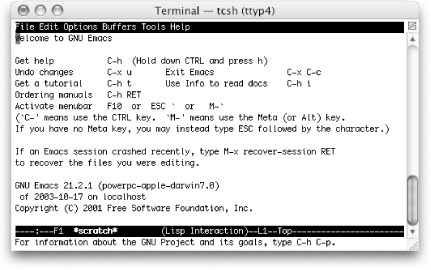
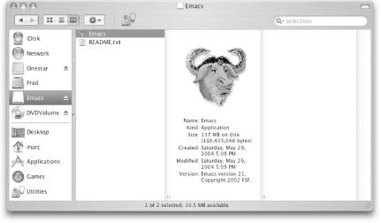

{% include JB/setup %}
{% raw %}
<div>
<div class="book" xml:lang="en"><div class="book"><div class="book"><div class="book"><h1 class="title"><a id="gnu3-CHP-13-SECT-2" class="calibre1"></a>Emacs and Mac OS X</h1></div></div></div><p class="copyright">As you may have picked up <a id="gnu3-CHP-13-ITERM-2939" class="calibre2"></a>
            <a id="gnu3-CHP-13-ITERM-2940" class="calibre2"></a>reading other parts of this book, we
treat Mac OS X as a Unix variant for many tasks. We do that with good
reason, of course. Mac OS X is based on Unix. For example, you could
more or less follow the CVS and Unix build instructions in the
previous sections and come away with a full installation of
Emacs.<sup class="calibre6">[<a id="gnu3-CHP-13-FNOTE-3" href="#ftn.gnu3-CHP-13-FNOTE-3" class="calibre2">3</a>]</sup> However, as
you know, Mac OS X can be a little different in some ways; it
doesn't have all the Unix utilities by default (see
the section on installing Ispell for one example of this). This
section covers installing Emacs on Mac OS X as well as other issues
such as running Emacs from the command line, changing the location of
your Meta key, and installing Ispell. And if you do want to build
Emacs from scratch using CVS, we have a few notes on that, too.</p><div class="book" xml:lang="en"><div class="book"><div class="book"><div class="book"><h2 class="title1"><a id="gnu3-CHP-13-SECT-2.1" class="calibre1"></a>"But I Already Have Emacs"</h2></div></div></div><p class="copyright">Mac OS X comes with a version
<a id="gnu3-CHP-13-ITERM-2941" class="calibre2"></a>of
Emacs installed: 21.2.1 with Panther (10.3.2) and 21.1.1 with Jaguar
(10.2.8). To start this version, use the Terminal application in your
<span><em class="calibre7">Utilities</em></span> folder (which is inside the
<span><em class="calibre7">Applications</em></span> folder) and just type <span><strong class="calibre5">emacs</strong></span>.</p><p class="copyright">
               <a class="calibre2" href="ch13s02.html#gnu3-CHP-13-FIG-3" title="Figure 13-3. The Terminal-based Emacs built into Mac OS X">Figure 13-3</a> shows the built-in Emacs running in the
Terminal application.</p><div class="figure"><a id="gnu3-CHP-13-FIG-3" class="calibre2"></a><div class="figure-contents"><div class="mediaobject"><a id="I_13_tt677" class="calibre2"></a></div></div><p class="title3"><b class="calibre25">Figure 13-3. The Terminal-based Emacs built into Mac OS X</b></p></div><br class="book"/><p class="copyright">But you should be aware that although it is built-in and certainly
the easiest to start using, this version of Emacs has a few
shortcomings:</p><div class="book"><ol class="orderedlist"><li class="listitem"><p class="copyright">It runs, well, you know, in a Terminal.</p></li><li class="listitem"><p class="copyright">It does not have any of the graphical user interface features such as
icons or expected mouse behavior.</p></li><li class="listitem"><p class="copyright">The Terminal application often supercedes Emacs when handling things
like the scrollbars and some key bindings.</p></li></ol></div><p class="copyright">If you can live with those restrictions—or have no
choice—then feel free to skip the next section on installing
Emacs and get on with using the version you have. The vast majority
of information in this book still applies.</p></div><div class="book" xml:lang="en"><div class="book"><div class="book"><div class="book"><h2 class="title1"><a id="gnu3-CHP-13-SECT-2.2" class="calibre1"></a>Installing Prebuilt Emacs on Mac OS X</h2></div></div></div><p class="copyright">What if you want the latest
<a id="gnu3-CHP-13-ITERM-2942" class="calibre2"></a>
               <a id="gnu3-CHP-13-ITERM-2943" class="calibre2"></a>
               <a id="gnu3-CHP-13-ITERM-2944" class="calibre2"></a>version of
Emacs but don't want to build it yourself? After
all, not every Mac OS X user is an old Unix hack! Mac systems made a
name for themselves by providing some of the best user interface
conventions around in a single, good-looking package. That
hasn't changed. If you're not a big
fan of do-it-yourself application building, you can download a nifty
application bundle and just drag-and-drop your way to a recent build
of Emacs.</p><div class="book" xml:lang="en"><div class="book"><div class="book"><div class="book"><h3 class="title4"><a id="gnu3-CHP-13-SECT-2.2.1" class="calibre1"></a>Downloading Alex Rice's application bundle of Emacs 21.3.5</h3></div></div></div><p class="copyright">Most Mac users will want to grab a prebuilt binary version of Emacs
that's all ready to go. Alex Rice created just such
a build. It can be found online (for free!<sup class="calibre6">[<a id="gnu3-CHP-13-FNOTE-4" href="#ftn.gnu3-CHP-13-FNOTE-4" class="calibre2">4</a>]</sup>) at:
<a class="calibre2" href="http://mindlube.com/products/emacs/index.html">http://mindlube.com/products/emacs/index.html</a>.
You can download directly from that page, but be sure to grab the
correct version. You can pick from the Jaguar (Mac OS X 10.2) version
or the Panther (Mac OS X 10.3) version.</p><p class="copyright">You'll be downloading a <span><em class="calibre7">.dmg</em></span>
file which is the Mac disk image format. It should automatically
unpack and mount itself, but if it doesn't for some
reason, just double-click on the <span><em class="calibre7">.dmg</em></span> file after
it is completely downloaded.</p><p class="copyright">As it launches, you'll need to read and agree to the
license. After you do that, you should have a new
"disk" mounted and
you'll see the Emacs application all ready to drag
and drop. (See <a class="calibre2" href="ch13s02.html#gnu3-CHP-13-FIG-4" title="Figure 13-4. The mounted disk image for Emacs on Mac OS X (Panther)">Figure 13-4</a>.)</p><div class="figure"><a id="gnu3-CHP-13-FIG-4" class="calibre2"></a><div class="figure-contents"><div class="mediaobject"><a id="I_13_tt678" class="calibre2"></a></div></div><p class="title3"><b class="calibre25">Figure 13-4. The mounted disk image for Emacs on Mac OS X (Panther)</b></p></div><br class="book"/><p class="copyright">Drag the big gnu to your <span><em class="calibre7">Applications</em></span> folder and
off you go. That really is all there is to it. Many, many thanks to
Alex Rice and Mindlube! (And feel free to eject the mounted image
once you have copied Emacs to your hard drive.)</p></div></div><div class="book" xml:lang="en"><div class="book"><div class="book"><div class="book"><h2 class="title1"><a id="gnu3-CHP-13-SECT-2.3" class="calibre1"></a>Building Emacs from Source on Mac OS X</h2></div></div></div><p class="copyright">While Mac OS X is <a id="gnu3-CHP-13-ITERM-2945" class="calibre2"></a>
               <a id="gnu3-CHP-13-ITERM-2946" class="calibre2"></a>
               <a id="gnu3-CHP-13-ITERM-2947" class="calibre2"></a>
               <a id="gnu3-CHP-13-ITERM-2948" class="calibre2"></a>based (very squarely) on Unix, as of
build 21.3.5, your best bet for building Emacs is still to go with a
slightly modified build process. (The Mac build should join up with
the normal build in version 21.4.) Until 2004, that separate process
was maintained by Andrew Choi and made available to the public at
<a class="calibre2" href="http://members.shaw.ca/akochoi-emacs/">http://members.shaw.ca/akochoi-emacs/</a>.
Fortunately, it is still available there, although Andrew is no
longer the Mac maintainer.</p><div class="warning"><h3 class="title6"><a id="gnu3-CHP-13-NOTE-20" class="calibre1"></a>Tip</h3><p class="calibre35">Full instructions on the build can also be found at
Andrew's site. While the build is essentially the
same as it is for other Unix systems (you run <span><strong class="calibre5">configure</strong></span> and then <span><strong class="calibre5">make</strong></span>), retrieving the source code is best done
through CVS to get the latest version. If you have installed the Mac
Developer Tools CD, you'll have CVS. If you
haven't installed the Mac Developer Tools (usually
available on a separate CD that came with your Mac or with your copy
of Mac OS X), you must; the Developer Tools are required to build
version 21.3 from source.</p></div><div class="book" xml:lang="en"><div class="book"><div class="book"><div class="book"><h3 class="title4"><a id="gnu3-CHP-13-SECT-2.3.1" class="calibre1"></a>Before you build</h3></div></div></div><p class="copyright">For the 21.3 build, Andrew Choi has posted the steps required to
retrieve and build Emacs at <a class="calibre2" href="http://members.shaw.ca/akochoi-emacs/stories/obtaining-and-building.html">http://members.shaw.ca/akochoi-emacs/stories/obtaining-and-building.html</a>.</p><p class="copyright">If you plan to go this route on Panther (Mac OS X 10.3), just follow
Andrew's instructions. Alternatively, you can follow
the Unix build instructions from the previous section. If
you're still running Jaguar, you'll
need to do a bit of preparatory work. Read on.</p><div class="book" xml:lang="en"><div class="book"><div class="book"><div class="book"><h4 class="title7"><a id="gnu3-CHP-13-SECT-2.3.3.1" class="calibre2"></a>Jaguar (Mac OS X 10.2) preparation</h4></div></div></div><p class="copyright">The first <a id="gnu3-CHP-13-ITERM-2949" class="calibre2"></a>
                     <a id="gnu3-CHP-13-ITERM-2950" class="calibre2"></a>of the extra
notes is that you should upgrade to Panther (10.3) if you
aren't there already. Seriously. There are lots of
benefits. But if that's just not in the cards for
you, you do need to take a small detour before installing Emacs.</p><p class="copyright">Mac OS X 10.2 lacks a piece of software required for Emacs: <span><strong class="calibre5">texinfo</strong></span>. (That tool comes preinstalled on
10.3.) It's not hard to install; you just have to
remember to do it. You basically install the <span><strong class="calibre5">texinfo</strong></span> package as you would if any other Unix
package. You can look back at the previous section for more details,
but here are the basics.</p><p class="copyright">You'll need to perform these commands from the
Terminal application. By default,
Terminal starts you out with a C-Shell variant, so
we'll use the <code class="calibre21">%</code> character for the
prompt in the commands for this section.</p><div class="book"><ol class="orderedlist"><li class="listitem"><p class="copyright">Pull the <span><strong class="calibre5">texinfo</strong></span> package from the
<span><em class="calibre7">/pub/gnu/texinfo</em></span> folder at
<span><em class="calibre7">ftp.gnu.org</em></span>. The compressed archive file will be
called something like <span><em class="calibre7">texinfo-4.7.tar.gz</em></span>. Grab
the latest version available.</p></li><li class="listitem"><p class="copyright">Unpack the archive.</p><a id="I_13_tt679" class="calibre2"></a><pre class="programlisting">% <strong class="calibre5"><code class="calibre32">tar xvzf texinfo-4.7.tar.gz</code></strong></pre><p class="copyright">If you downloaded <span><strong class="calibre5">texinfo</strong></span> through a
browser, chances are the browser uncompressed it for you. Some of
them might even have unpacked it as well. If you have a<span><em class="calibre7">.
tar</em></span> file sitting on your desktop, you can unpack it like
this:</p><a id="I_13_tt680" class="calibre2"></a><pre class="programlisting">% <strong class="calibre5"><code class="calibre32">tar xvf texinfo-4.7.tar</code></strong></pre></li><li class="listitem"><p class="copyright">Move to the <span><em class="calibre7">texinfo-4.7</em></span> directory and configure
your build.</p><a id="I_13_tt681" class="calibre2"></a><pre class="programlisting">% <strong class="calibre5"><code class="calibre32">./configure</code></strong></pre></li><li class="listitem"><p class="copyright">Assuming that all goes well, you can build everything:</p><a id="I_13_tt682" class="calibre2"></a><pre class="programlisting">% <strong class="calibre5"><code class="calibre32">make</code></strong></pre></li><li class="listitem"><p class="copyright">And assuming that went well, you can install it. But
you'll have to do that as an administrator.
Fortunately that's easy to do in the Terminal
window. Just run this command:</p><a id="I_13_tt683" class="calibre2"></a><pre class="programlisting">% <strong class="calibre5"><code class="calibre32">sudo make install</code></strong></pre></li></ol></div><p class="copyright">You'll be prompted for your password. Type it in and
everything should go well. If you aren't allowed to
administer your own machine, you'll need the help of
someone who does have admin privileges.</p><p class="copyright">Now that you've installed <span><strong class="calibre5">texinfo</strong></span>, you'll need to
download, unpack, and install Emacs, either by following Andrew
Choi's instructions or ours in the
"Emacs and Unix" section earlier in
this chapter.</p><p class="copyright">Your Mac build should end up creating a double-clickable icon that
you can drag and drop into your <span><em class="calibre7">Applications</em></span>
folder just like the prebuilt download.</p></div></div></div><div class="book" xml:lang="en"><div class="book"><div class="book"><div class="book"><h2 class="title1"><a id="gnu3-CHP-13-SECT-2.4" class="calibre1"></a>Starting Emacs from the Command Line on Mac OS X</h2></div></div></div><p class="copyright">On Mac OS X, you have Emacs preinstalled, but
<a id="gnu3-CHP-13-ITERM-2951" class="calibre2"></a>
               <a id="gnu3-CHP-13-ITERM-2952" class="calibre2"></a>
               <a id="gnu3-CHP-13-ITERM-2953" class="calibre2"></a>as we
know, it is an older version of Emacs. Let's say
that you have installed the graphical version and want to start it
with some command-line arguments. For example, you might want to
run <span><strong class="calibre5">emacs —debug-init</strong></span> to debug
your <span><em class="calibre7">.emacs</em></span> file. The Mac OS X Gnu icon
certainly should be a permanent fixture on your Dock, but at times
the command line is the way to go.</p><p class="copyright">We learned this trick from Andrew Choi's Mac OS X
FAQ, and we share it here, slightly tweaked, for convenience. Check
out his page at <a class="calibre2" href="http://members.shaw.ca/akochoi-emacs/stories/faq.html">http://members.shaw.ca/akochoi-emacs/stories/faq.html</a>.</p><p class="copyright">Essentially, you replace the binary that comes with Mac OS X with a
shell script that runs the new version of Emacs you installed. You
might want to simply rename the old binary so that you can on
occasion use it instead.</p><p class="copyright">Here's the procedure.</p><div class="book"><ol class="orderedlist"><li class="listitem"><p class="copyright">To be sure which Emacs runs when you type <span><strong class="calibre5">emacs</strong></span>, type <span><strong class="calibre5">which
emacs</strong></span> in the Terminal application.</p><a id="I_13_tt684" class="calibre2"></a><pre class="programlisting">% <strong class="calibre5"><code class="calibre32">which emacs</code></strong>
/usr/bin/emacs</pre></li><li class="listitem"><p class="copyright">Rename or delete <span><em class="calibre7">/usr/bin/emacs</em></span>.</p><a id="I_13_tt685" class="calibre2"></a><pre class="programlisting">% <strong class="calibre5"><code class="calibre32">sudo mv /usr/bin/emacs /usr/bin/oldemacs</code></strong></pre></li><li class="listitem"><p class="copyright">You'll be prompted for your password.</p></li><li class="listitem"><p class="copyright">Create a file called <span><em class="calibre7">emacs</em></span> with the following
two lines:</p><a id="I_13_tt686" class="calibre2"></a><pre class="programlisting">#!/bin/sh
/Applications/Emacs.app/Contents/MacOS/Emacs "$@"</pre><p class="copyright">If you installed Emacs into a different folder, adjust the second
line accordingly.</p></li><li class="listitem"><p class="copyright">Move the file you created to <span><em class="calibre7">/usr/bin</em></span>:</p><a id="I_13_tt687" class="calibre2"></a><pre class="programlisting">% <strong class="calibre5"><code class="calibre32">sudo mv emacs /usr/bin</code></strong></pre></li><li class="listitem"><p class="copyright">Change <span><em class="calibre7">/usr/bin/emacs</em></span> to be executable by the
world:</p><a id="I_13_tt688" class="calibre2"></a><pre class="programlisting">% <strong class="calibre5"><code class="calibre32">chmod +x /usr/bin/emacs</code></strong></pre><p class="copyright">Now you can invoke graphical Emacs from the terminal window simply by
typing <span><strong class="calibre5">emacs</strong></span>, with or without
command-line arguments.<sup class="calibre6">[<a id="gnu3-CHP-13-FNOTE-5" href="#ftn.gnu3-CHP-13-FNOTE-5" class="calibre2">5</a>]</sup>
                  </p></li></ol></div></div><div class="book" xml:lang="en"><div class="book"><div class="book"><div class="book"><h2 class="title1"><a id="gnu3-CHP-13-SECT-2.5" class="calibre1"></a>Mac OS X and the Meta Key</h2></div></div></div><p class="copyright">This book has mentioned <a id="gnu3-CHP-13-ITERM-2954" class="calibre2"></a>
               <a id="gnu3-CHP-13-ITERM-2955" class="calibre2"></a>
               <a id="gnu3-CHP-13-ITERM-2956" class="calibre2"></a>using the
<span><strong class="calibre5">Command</strong></span> key for <span><strong class="calibre5">Meta</strong></span> on Mac OS X. By default, the <span><strong class="calibre5">Command</strong></span> key (sometimes called the <span><strong class="calibre5">Open Apple</strong></span> key, or more simply xxxMacSymxxx)
is <span><strong class="calibre5">Meta</strong></span>. But in fact you have a
choice. The variable <span><strong class="calibre5">mac-command-key-is-meta</strong></span> can be used to select
which key you want to use.</p><p class="copyright">As the variable name implies, setting <span><strong class="calibre5">mac-command-key-is-meta</strong></span> to <span><strong class="calibre5">t</strong></span> means that you use xxxMacSymxxx
as the <span><strong class="calibre5">Meta</strong></span> key. So you can type the
<span><strong class="calibre5">M-x</strong></span> combination as xxxMacSymxxx<span><strong class="calibre5">x</strong></span>.</p><p class="copyright">The alternative (setting <span><strong class="calibre5">mac-command-key-is-meta</strong></span> to <span><strong class="calibre5">nil</strong></span>) sets the <span><strong class="calibre5">Option</strong></span> (or <span><strong class="calibre5">Alt</strong></span>) key to be your <span><strong class="calibre5">Meta</strong></span> key. You might do this if you want to
continue using the <span><strong class="calibre5">Command</strong></span> key for
Mac functions or if you find that <span><strong class="calibre5">Option</strong></span> is simply easier to reach. Of course,
it's not quite that simple. Emacs still traps the
<span><strong class="calibre5">Command</strong></span> key. That trapping is
supposed to be turned off with one more variable: <span><strong class="calibre5">mac-pass-command-to-system</strong></span>, but to be honest,
we never got that to work.</p></div><div class="book" xml:lang="en"><div class="book"><div class="book"><div class="book"><h2 class="title1"><a id="gnu3-CHP-13-SECT-2.6" class="calibre1"></a>Installing Ispell</h2></div></div></div><p class="copyright">As mentioned in <a class="calibre2" href="ch03.html" title="Chapter 3. Search and Replace">Chapter 3</a>, Emacs uses
<a id="gnu3-CHP-13-ITERM-2957" class="calibre2"></a>
               <a id="gnu3-CHP-13-ITERM-2958" class="calibre2"></a>
               <a id="gnu3-CHP-13-ITERM-2959" class="calibre2"></a>
               <a id="gnu3-CHP-13-ITERM-2960" class="calibre2"></a>Ispell for its spell-checking
functionality. However, despite voluminous hooks to it, the Ispell
executable is not part of Emacs and is not installed by default on
Mac OS X. You must therefore install Ispell to get spell-checking to
work properly.</p><p class="copyright">We took the easy path to doing this: downloading and installing Fink
(see <a class="calibre2" href="http://fink.sourceforge.net">http://fink.sourceforge.net</a>
for instructions). Fink is an all-purpose Mac OS X installer that
enables you to install Unix software on your Mac easily.</p><p class="copyright">After installing Fink, installing Ispell was completely painless:</p><a id="I_13_tt689" class="calibre2"></a><pre class="programlisting">  % <strong class="calibre5"><code class="calibre32">fink install ispell</code></strong></pre><p class="copyright">Just one further step is required so that Emacs finds Ispell without
tweaking. Create a symbolic link between the location where Fink
installs Ispell (<span><em class="calibre7">/sw/bin/ispell</em></span>) and where Emacs
expects Ispell to be
(<span><em class="calibre7">/usr/bin/ispell</em></span>).<sup class="calibre6">[<a id="gnu3-CHP-13-FNOTE-6" href="#ftn.gnu3-CHP-13-FNOTE-6" class="calibre2">6</a>]</sup>
            </p><a id="I_13_tt690" class="calibre2"></a><pre class="programlisting">% <strong class="calibre5"><code class="calibre32">sudo ln -s /sw/bin/ispell /usr/bin/ispell</code></strong></pre><p class="copyright">Voilà. Emacs spell-checking with Ispell now works as
described in <a class="calibre2" href="ch03.html" title="Chapter 3. Search and Replace">Chapter 3</a>.</p></div><div class="book"><br class="book"/><hr class="calibre4"/><div class="book"><p class="copyright"><sup class="calibre6">[<a id="ftn.gnu3-CHP-13-FNOTE-3" href="#gnu3-CHP-13-FNOTE-3" class="calibre2">3</a>] </sup>We say "more or
less" because at the time we went to press, you
still needed to grab the source from a separate site. That difference
should eventually disappear as well.</p></div><div class="book"><p class="copyright"><sup class="calibre6">[<a id="ftn.gnu3-CHP-13-FNOTE-4" href="#gnu3-CHP-13-FNOTE-4" class="calibre2">4</a>] </sup>A donation
to defray hosting costs would certainly be appreciated; the site
includes a link for contributions.</p></div><div class="book"><p class="copyright"><sup class="calibre6">[<a id="ftn.gnu3-CHP-13-FNOTE-5" href="#gnu3-CHP-13-FNOTE-5" class="calibre2">5</a>] </sup>You can still run this new
Emacs as a plain Terminal app with the <span><strong class="calibre5">-nw</strong></span> command-line argument (type <span><strong class="calibre5">emacs -nw</strong></span>.)</p></div><div class="book"><p class="copyright"><sup class="calibre6">[<a id="ftn.gnu3-CHP-13-FNOTE-6" href="#gnu3-CHP-13-FNOTE-6" class="calibre2">6</a>] </sup>We found this
hint on John Schneider's web page called
"Getting Mac OS X.3 to Behave Almost Like My Linux
Boxes" (<a class="calibre2" href="http://www.eecs.wsu.edu/~schneidj/mac-os-x-10.3.html">http://www.eecs.wsu.edu/~schneidj/mac-os-x-10.3.html</a>).</p></div></div></div></div>

{% endraw %}

